Clonecilla Recuperación
Clonecilla Recuperación
Restaurar la clonación sería la segunda parte del proceso, se necesita el medio externo en el que esta la imagen
Las capturas hasta llegar aquí son iguales a la parte 1, aqui selecionamos "device-imagen"
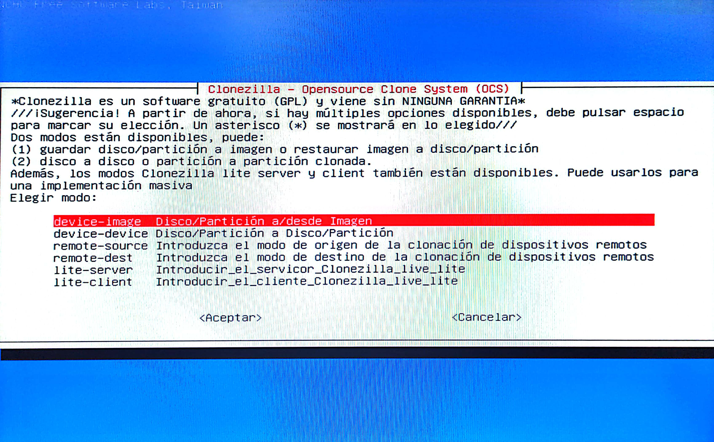
Aqui selecionamos la primera opción
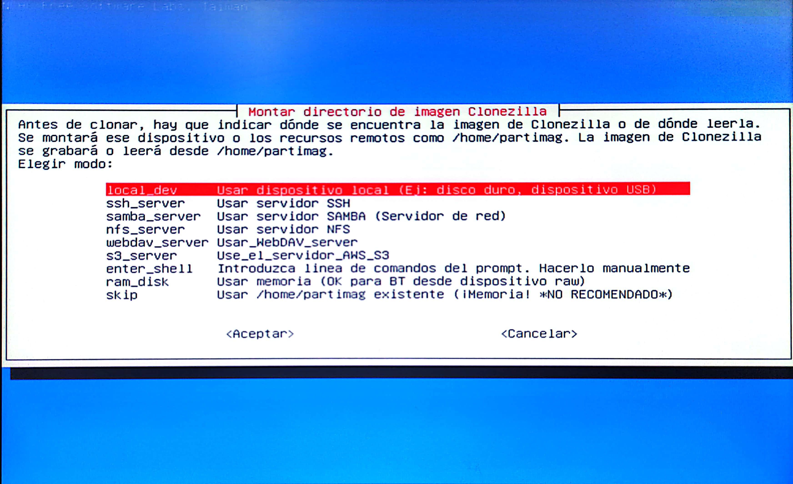
Insertamos el medio fisico
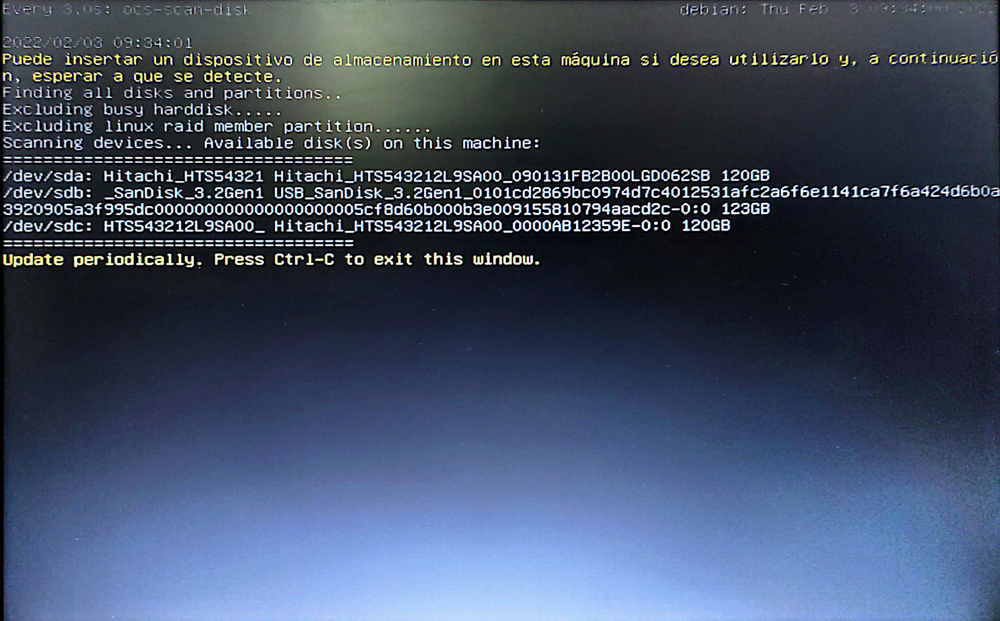
Selecionamos donde esta la imagen
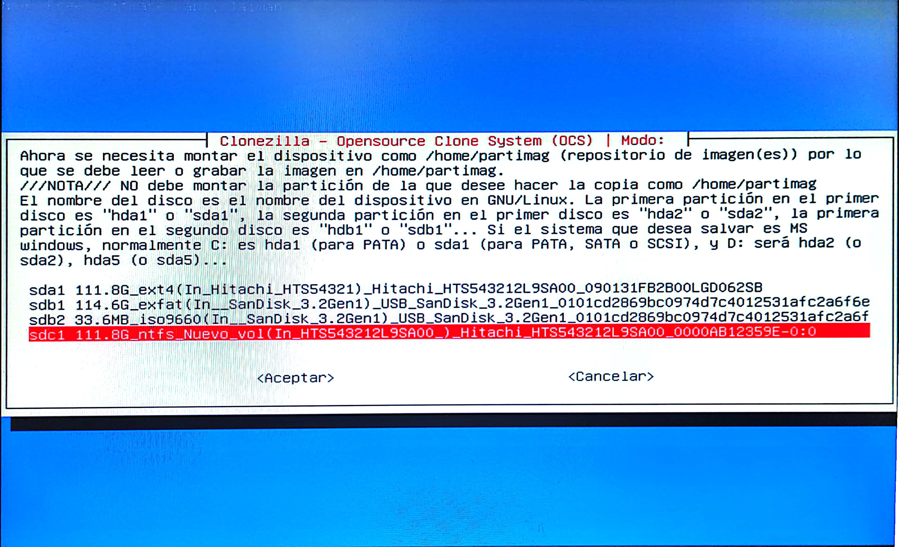
Omitimos el chequeo
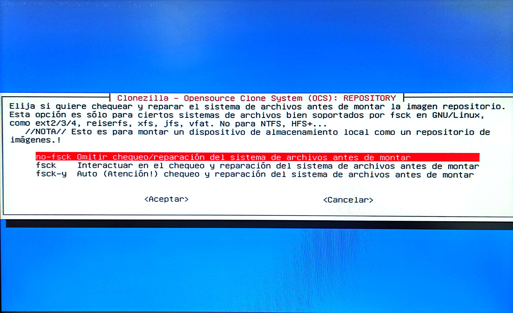
Selecionamos la imagen que esta en el medio externo
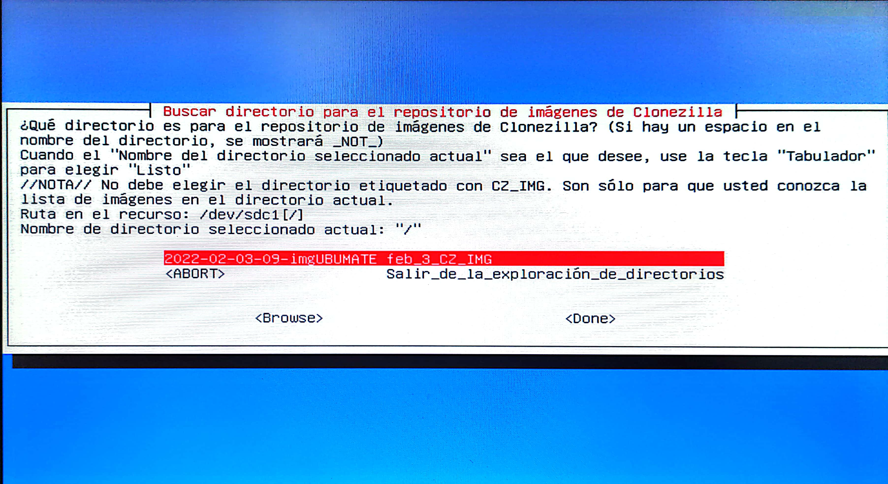
Selecionamos lo que queremos hacer con la imagen, en este caso "restoredisk"
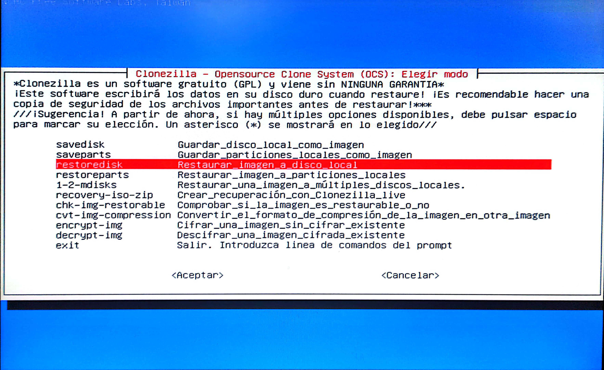
Elegimos esta imagen
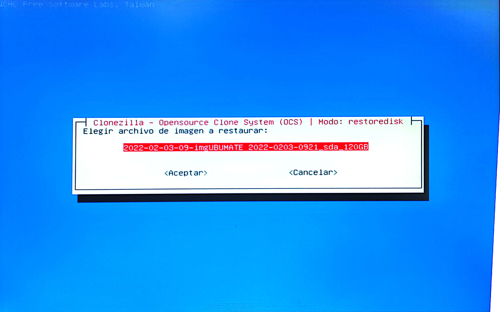
Selecionamos donde queremos restaurarla
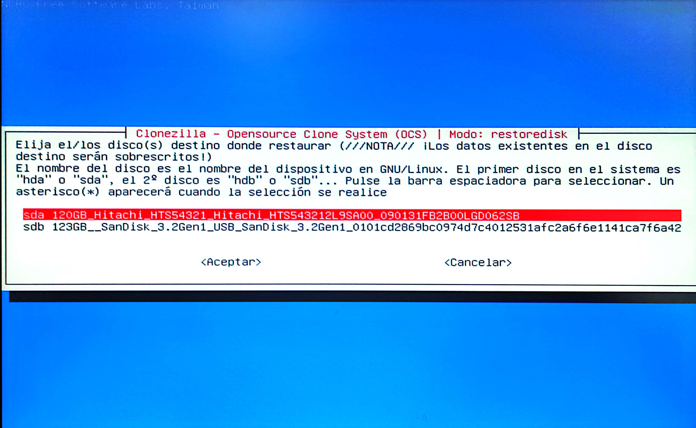
Selecionamos si queremos comprobar
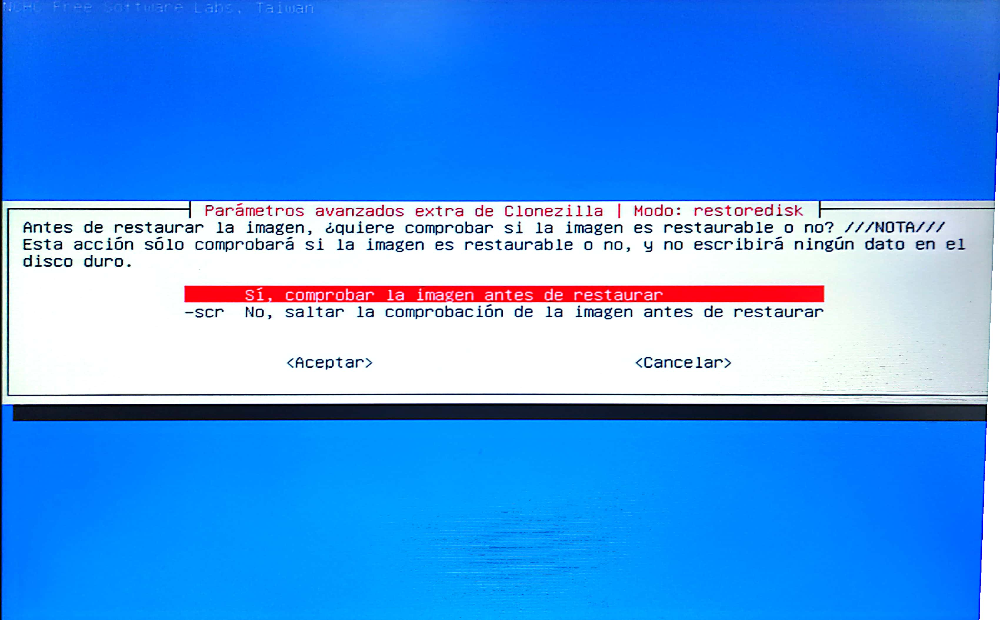
Elegimos que queremos que haga clonecilla despues de todo el proceso
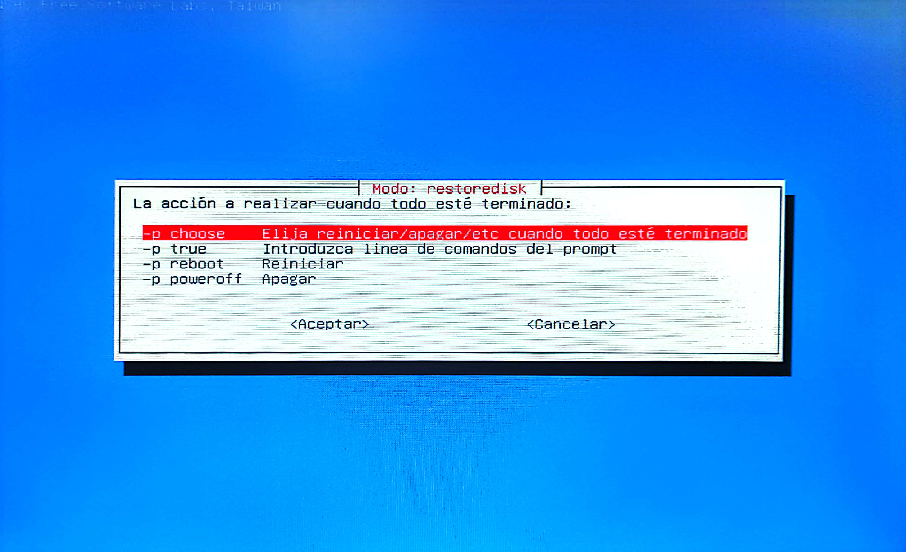
Empieza
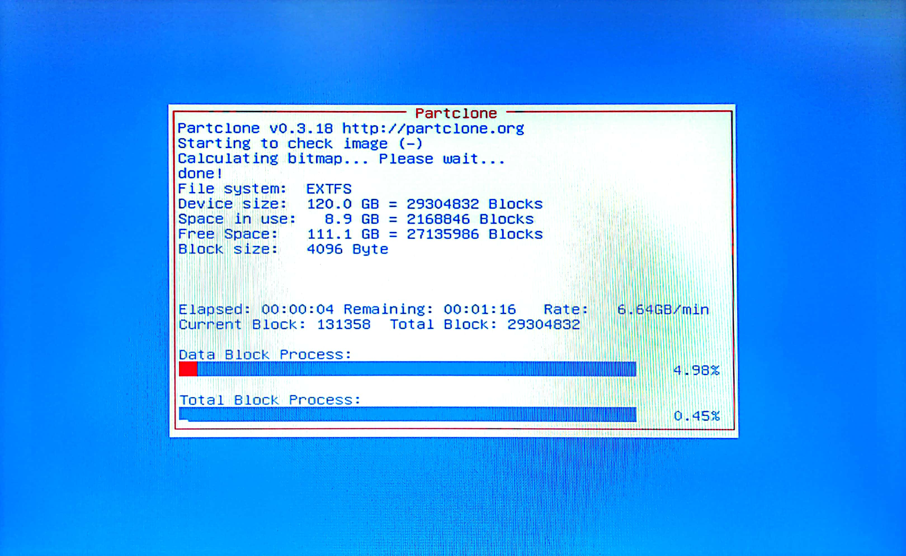
Marcamos "y" para continuar
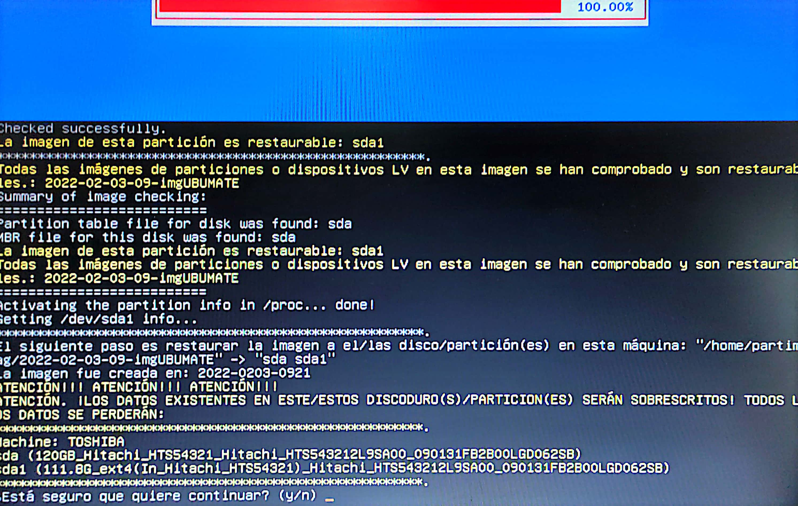
Saldran varias pantalla como esta hasta que termine todo
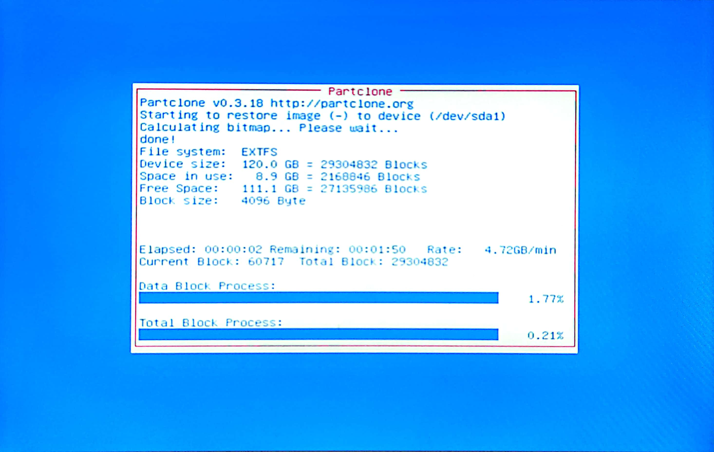
|